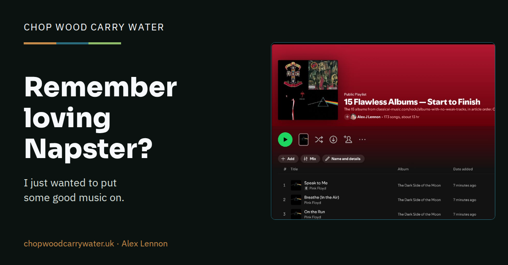

Music and everyday life · 16th October 2026
Remember loving Napster?
I knew where my music was when I had my tapes and CDs. Now I have millions of tracks to choose from, and I’ve asked Briar to help me find what I fancy hearing.

I was working in Cambridge in the late 1990s when Napster arrived. I still remember how wonderful it felt to find music that had previously been out of reach: unfamiliar bands, bootleg recordings, things other people knew about and were suddenly able to share.
I thought about Napster again this week after asking Briar to make me a Spotify playlist from an article I’d spotted in the Guardian and shared with them on our private Telegram channel. It brought me back to something that irritates me about listening to music now. When I had my tapes and CDs, I knew where my music was. These days I can listen to millions of tracks, but I don’t always know how to find what I want to hear.
There have been a few twists and turns between sharing MP3s in Cambridge and asking an assistant to sort out my listening. Many years have passed, but perhaps you might enjoy hearing a little of this history.
Going back in time....
Napster emerged in 1999, with software developed by Shawn Fanning. It helped people find MP3 files on one another’s computers and transfer them directly. The files lived with the users; a central service helped them find each other.
People were sharing copyrighted recordings without permission or payment. The record labels argued that this was copyright infringement and took Napster to court. The original service shut down in July 2001 following an injunction.
People carried on sharing files through other services, and the record industry began taking listeners themselves to court.
In September 2003, the US recording industry announced 261 lawsuits against individual file-sharers. Five years later, the Electronic Frontier Foundation, which opposed the campaign, counted at least 30,000 people facing filed cases, settlements or threatened legal action. That figure included people who settled or were threatened with legal action; it wasn’t 30,000 court judgments.
Twelve-year-old Brianna LaHara and her mother settled for $2,000 in 2003 after the girl was accused of sharing music through Kazaa. In Britain, Sylvia Price received a £4,000 demand in 2005 over her teenage daughter’s file-sharing.
A family didn’t need a child deliberately running a music server. A shared folder on an ordinary home computer could supply files to other P2P users. The adult paying the internet bill might find out what was happening through a letter from solicitors.
The biggest awards were startling. Jammie Thomas-Rasset’s US case concerned 24 recordings. One jury awarded $1.92 million, or $80,000 per recording. After three trials and disputes over damages, the appeals court directed a $222,000 judgment in 2012. Joel Tenenbaum’s jury awarded $675,000 for 30 recordings, upheld on appeal in 2013.
These kinds of numbers are baffling. Let’s take a look. US copyright law allowed statutory damages instead of proof of actual financial loss: ordinarily $750 to $30,000 per copyrighted work, rising to $150,000 for wilful infringement. Deterrence was part of the purpose. The courts weren’t deciding that a song’s shop price was $80,000, or multiplying its price by a proven number of downloads. The awards were per recording in the lawsuit; the possibility of wider distribution helped explain why the industry considered file-sharing so damaging.
Nor was a parent automatically liable because their name appeared on the broadband account. Deborah Foster successfully defended a claim against her, and in 2007 the court awarded her $68,685.23 in legal fees and costs. A demand for money wasn’t the same as an agreed settlement or an award made by a court. Winning still meant fighting the case and paying for a lawyer along the way.
By December 2008, the RIAA said it was ending its campaign of new mass lawsuits against individuals in favour of working with internet providers. Existing cases continued. I suspect they felt they had made their point.
Meanwhile, Napster’s name had already returned under different ownership. Roxio relaunched it in 2003 as a paid service, using the subscription business it had bought, pressplay. This time, the record labels had agreed to license the music.
People still wanted an easy way to get their music. Services such as Spotify would give them one, with the record labels on board.
Where’s my music?
I’m not quite old enough to have had a vinyl collection, but I had my tapes, then CDs. Occasionally I could even find the right CD in the right case.
Spotify, Amazon Music and other services now give me access to more music than I could ever have fitted on my shelves. I love being able to hear an album without having to go out and buy it. But I can open a service with millions of tracks and still struggle to find something I want to put on.
I knew where my music was when I had my tapes and CDs. Now I often don’t even know how to search for what I want to listen to. And when I do come across something I fancy hearing, perhaps in an article or a message from a friend, I still have to go and find it all.
What irritates the hell out of me is having to adapt what I want to do to the tools each service offers. I end up searching for albums, checking which release I’ve found and adding tracks. By then I’m organising music rather than listening to it.
This week I’d seen a list of albums I fancied hearing. I wanted Briar to put them on for me.
Make me a playlist
The article I’d shared with Briar was “These 15 albums are basically flawless from start to finish”.
Pink Floyd, Guns N’ Roses, Steely Dan, Slayer, Fleetwood Mac and plenty more. The sort of list that makes you want to revisit half your record collection and discover what you missed in the other half.
Later, in my desktop chat, I asked:
Ingest the link I sent to Telegram Briar about the best albums and create a Spotify playlist from this I can play.
I didn’t send the article again, type out the album names or explain which buttons to press.
Briar found the message, read the article and put the albums into Spotify in the order they appeared. It selected standard editions without the extra tracks you get on deluxe releases, so I could listen to the albums themselves from start to finish.
Getting into Spotify took a little sorting out, which Briar handled too. I didn’t have to interrupt what I was doing to get the playlist made.
The result was 15 albums, 173 tracks and about 13 hours of music, ready to play in my Spotify account.
You can listen here: 15 Flawless Albums - Start to Finish. Leave shuffle off if you want to hear the albums in sequence.
Getting me what I wanted
That is what I mean by an agentic harness being useful.
I’d already sent Briar the article. Later I asked for a playlist, and it sorted it out. I now have thirteen hours of music I fancy listening to, without spending the evening putting it together myself.
Now I want to listen to my 90s rave music!
How do you find what you fancy listening to? I’d be interested to hear how you get on with this too.
(Briar helped draft this)